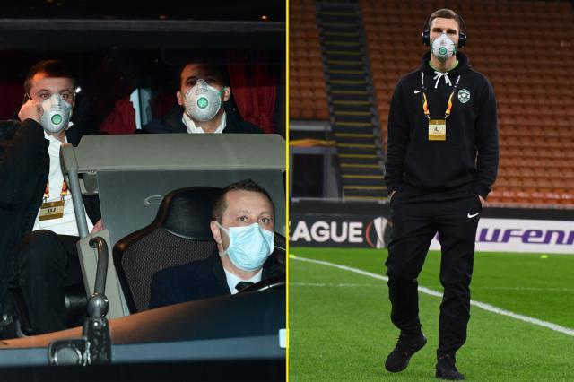
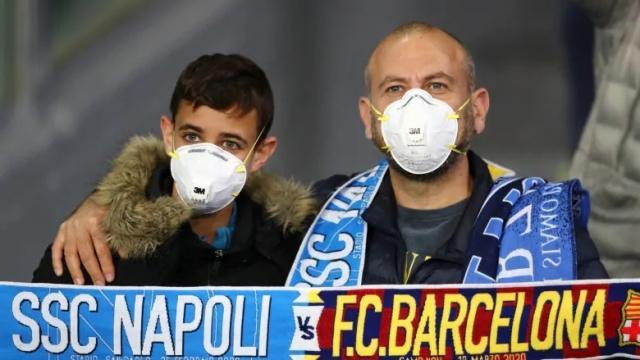
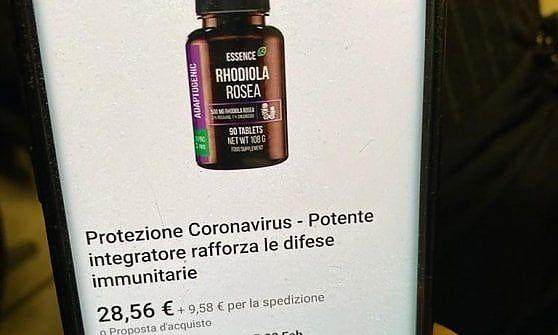

口述 | 我们家里四个人，都在疫情前线
原文链接 备份链接 疫情爆发后，“家”这个字的含义突然变得宽广起来。 对于被禁锢于门内的居民来说，它是社区里的守望相助；对不幸感染的新冠患者来说，它是方舱医院里的“从陌生到熟悉”；而对于小D一家来说，它是每天不定时显示在微信群里的“你还好 …
体坛周报全媒体驻意大利记者 王勤伯
（一）
保加利亚卢多戈雷茨欧联杯1/16决赛来米兰打客场，球员一路都戴着口罩，甚至在进入球场的时候也戴着，只有出场比赛没有戴。
空场比赛将是本周末意甲联赛的普遍景象。昨天发表在体坛加app的文章，我曾谈到周日的意大利国家德比仍有希望正常举行，售票也没有停止。
但在周四晚些时候，意甲联盟公布了决定，本周末北方的意甲主场全部闭门比赛，包括乌迪内斯vs佛罗伦萨、AC米兰vs热那亚、帕尔马vs斯帕尔、萨索洛vs布雷西亚、尤文图斯vs国际米兰。
这个决定比较合乎逻辑。
想想看，巴伦西亚一位随队记者来米兰采访亚特兰大和巴伦西亚的欧冠比赛，回去就被查出阳性，球迷里也有病例，这说明病毒其实已经在米兰城流传一段时间了，尽管目前没有冒出那么多病例，但谨慎对待总不是坏事。

（二）
有很多朋友很关心地打听，我家里有没有囤物资，例如口罩、消毒液之类的。
坦白地说，家里原来买过10个口罩，2周前陪小孩去儿童医院的时候用过，其他时候都没用上，可能还剩下五六个。
现在我所在的托斯卡纳大区确诊人数仍然是2例，今天或许会增加到4例或5例，没有疫情爆点出现。
关于防疫问题，意大利无论是卫生部发放的10点告示，还是各路医学专家、病毒学家出来说话，全都把“勤洗手”放在第一位。
我也觉得这个问题至关重要。意大利是全世界最长寿的国家之一，而且很少听说爆发大规模的消化道传染病，但并不意味着所有人都有良好的卫生习惯。举例说，你去付水单费，笑容可掬的邮电局大妈营业员一边和你唠家常，一边用手指蘸口水数钱，然后又用蘸过自己口水的手把打印好的单子递给你，这是很常见的事情。
那么口罩呢？
意大利的医学专家和病毒学家一致告诉民众，戴口罩只对病人和医护人员有意义，对于普通人没有意义，所以，抢购口罩是没有价值的。
不过这些呼吁还是无法阻止口罩被买光，同时被买光的还有消毒液。专家说了普通人不需要口罩，那么没有消毒液怎么办呢？
米兰的不止一家药店每天自制消毒液，然后让顾客自己带瓶子来，免费提供。同时网络上也有专家讲解如何自制消毒液。
所以，这两个紧缺似乎显得不是那么紧要。与此同时，意大利警方也展开了对网络投机商的打击。
在我看来，由于海外华侨很了解国内的疫情，为家人多囤点物资不是什么问题，只要不是处于倒卖发灾难财的目的就行。但我自己的选择，还是比较相信意大利专家们的说法，囤积物资的行动就不参与了。
那么你可能会问，如果我突然发病需要去医院，一时间找不到口罩到底该怎么办？
就我的了解，佛罗伦萨在近期防疫升级之后，医院急诊门口有一个专门的口罩发放点，确保每个进入急诊的人都戴着口罩。
同时，如果是发热问题，那么就不应该去急诊，而是打电话给家庭医生，或者意大利各级政府设立的热线。如果家庭医生认为有必要，会叫来专门的救护车把患者从家里直接接走，不用去急诊。如果患者没有口罩，救护人员当然也会给他。

（三）
意大利总理周四在那不勒斯参加意法峰会以后调侃了极右“联盟党”的政客，“之前让我赶紧关的那些人，要求把申根也关闭了，现在又要求我赶紧全面开放。”
这个调侃何来？
原因是意大利人在开始看低新冠病毒的杀伤力。
确诊人数在增加，到2月27日已经突破600例，但与此同时，也有超过40个病人宣布痊愈，不止一个痊愈者表示，症状也就是普通流感，来自武汉的中国老夫妻出院了， 1号病人病情早已稳定，斯帕兰扎尼医院宣布瑞德西韦有疗效。病死的基本都是75岁以上、患有慢性病的老年人。
所以，2月27日，卫生部长斯佩兰扎面带喜色地表示，这个病毒造成的重症比例并不高，意大利的防疫工作得到了欧盟的肯定，同时也得到了欧盟疾控部门的建议，将工作重点集中在有症状感染者。
这里可以看到，欧盟更倾向的是类似新加坡的防控模式，尽可能不要让防疫影响到社会生活的正常运转。意大利北方要求结束各种禁令的呼声也非常多。例如米兰市长萨拉就要求政府尽快同意重新开放博物馆，
如何在控制疫情和确保社会经济秩序之间找到平衡，对于孔特是个挑战，这涉及到一个很微妙的计算问题，如果答卷交好了，对于孔特的政敌萨尔维尼和伦齐会是重要的打击，如果出现大的危机，无论是防疫危机还是社会经济危机，萨尔维尼和伦齐都会乘虚而入。
平衡的要点在哪里？
（四）
上次说到意大利隆巴底大区的科多尼奥镇成为疫情最大爆点，和接受1号病人的医院成为传染源有关。最近两天意大利媒体的各种复盘和调查也展开了。
科多尼奥医院的医生承认，由于对这个疾病缺少了解，所以首先是错过了第一时间测试核酸，直到患者出现了呼吸系统症状，在妻子陪同之下再次来到医院急诊，妻子帮他回忆起，患者曾经和中国回来的一位经理人吃过饭，医院才意识到可能和新冠病毒有关，给他做了试纸。
第二个失误，也是最重要的失误，是在怀疑1号病人患了新冠肺炎以后，医院没有采取应急措施：立即暂停门诊，对患者出入过的空间消毒，对医护人员进行接触史盘查——这些工作晚了足足36个小时才展开，这是科多尼奥医院成为疫情爆点的重要原因。
那么，如果意大利各地的医院能够汲取科多尼奥的教训，是否有希望避免新的爆点出现，未来的案例将只是零星个案？
这样说还太早，因为人类对新冠肺炎的认识实在太少了，尤其是它的传播能力。目前在疫情重灾区，已有至少2家医院出现了住院床位不够的问题，一些需要急救的病人被转运到更大的医院。同时，米兰圣拉斐尔医院的一位麻醉师感染发病被确诊，他的十几位同事被立即隔离。
这种情况如果蔓延下去，导致的直接后果就是意大利公共卫生系统瘫痪：医院没有病床、医护人员大面积隔离，谁来给病人看病治病？
所以，关键的关键在于：如果各行各业重新开放，各种大型活动照常举行，意大利能否确保不再出现新的疫情爆点，能否确保不在大城市出现巨型聚众感染？
这似乎很难吧。新冠真的是可防可控的，但这不等于它不必防控。到底开放到什么程度可以维持疫情可防可控，这需要精准的计算能力，也需要一点点运气。
（五）
上一篇讲到意大利被封城的小镇，其实是可以逃出来的。目前一共查到逃出来7个人，有一些也就是跑去附近没封锁的地方投奔亲戚，最远的一个跑到了佛罗伦萨，不到300公里。他原本希望到佛罗伦萨投奔一个好友，没想到刚到就被查到，立即把他送回了疫区。
这里可能会有人问，不是说意大利法律规定，违反封锁禁令面临3个月监禁吗? 为什么不把他马上抓起来。
这里我们需要搞明白，抓人、扣押和坐牢并不是同一件事情，而且法律保证任何嫌犯都有为自己辩护的机会。所以他面临的法律处分是之后的事情，现在他的第一身份是疫区居民，警方也不可能掏钱在佛罗伦萨开个旅馆房间让他封闭隔离，最好的办法还是让他回到自己家里。
上次聊到意大利人防火防盗防试纸，在意大利还有一种诈骗，就是把一些营养保健品包装成“防治新冠药物”，在网络上兜售。
图中是网上找到的红景天胶囊。它被直接包装成为“抗新冠药物”，加上邮费，几乎达到40欧元一瓶。红景天在中医入药，在俄罗斯和斯堪的纳维亚民间也被视作可以治疗焦虑、抑郁、疲劳、头痛等问题，一个特点是副作用小——吃了没害，用于大多数轻症治愈者，确实可以让他们相信自己是被红景天胶囊治好的。

原文链接 备份链接 疫情爆发后，“家”这个字的含义突然变得宽广起来。 对于被禁锢于门内的居民来说，它是社区里的守望相助；对不幸感染的新冠患者来说，它是方舱医院里的“从陌生到熟悉”；而对于小D一家来说，它是每天不定时显示在微信群里的“你还好 …
原文链接 备份链接 经济观察网 记者 欧阳晓红 几乎是一夜之间，新冠病毒袭击了意大利北部伦巴第和威尼托地区小城镇。 确诊152例，死亡4例（最新增的一例是84岁老人）。这是截至当地时间2月24日09时的意大利疫情数据。而米兰以东的伦巴第地 …
原文链接 备份链接 点击上图，一键下单** 【武汉现场：抗击新冠肺炎】** 记者 | 吴琪 我从没见过这样的汉口火车站。 1月23日，大年二十九。上午8点40分、50分，墙上的时钟往前走，随着一拨拨人上车，庞大的候车大厅，像被一支巨大的 …
原文链接 备份链接 疫情发展 根据丁香医生实时数据，截至 2020 年 2 月 6 日 18 时，全国累计确诊病例 28129 例，疑似病例 24702 例，新增确诊病例 3766 例，新增疑似病例 5328 例。其中，重症病例 3859 …
原文链接 备份链接 我一度后悔自己离开了医生这个职业，他们那么缺人，我却不能跟他们一起冲上去。难过、绝望、内疚…… 口述 | 冯 翔**** 整理 | 陈 冰 …… 冬天腊梅花， 夏天石榴花， 晴天都是人， 雨天都是伢。 过路的看风景， …